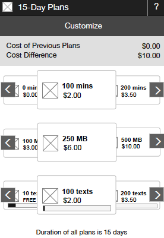

Defines how the exchange category is presented. Select from:
- Accordion: For the ability to exchange one type of plan.
- Carousel: For the ability to exchange up to three types of plans. Create one Carousel category, which can contain up to three Child categories.
- Child: For the ability to exchange one type of plan within a carousel. Add up to three Child categories to the All Child Categories list on the Advanced tab of the Carousel category.
|
This shows an example of how an accordion category might look. "MONTHLY PLANS" is the name of the category, and customers can exchange between the plans in the category. |
 This shows an example of how a carousel category might look with three child categories. "15-Day Plans" is the name of the carousel category. The children of the carousel do not show the category name, but all the plans within each child are of the same type, in this example, voice, text, and data. |

Defines when customers see the exchange category and the products within it. Select from:
- Account is created
- Subscribers join
- Both
In exchange categories, the order of the products in the All Products list in the Products tab defines not only the order in which the products are displayed, they define an order that is commonly thought of as upgrade and downgrade. If a customer exchanges for a product higher on the list (ascending), that's typically considered an upgrade, and if a customer exchanges for a product lower on the list (descending), that's typically considered a downgrade. Within an exchange category, you can define separately when ascending exchanges and descending exchanges are fulfilled. Select from:
- Immediately
- Start of next cycle
- User chooses (Immediately or Start of next cycle)